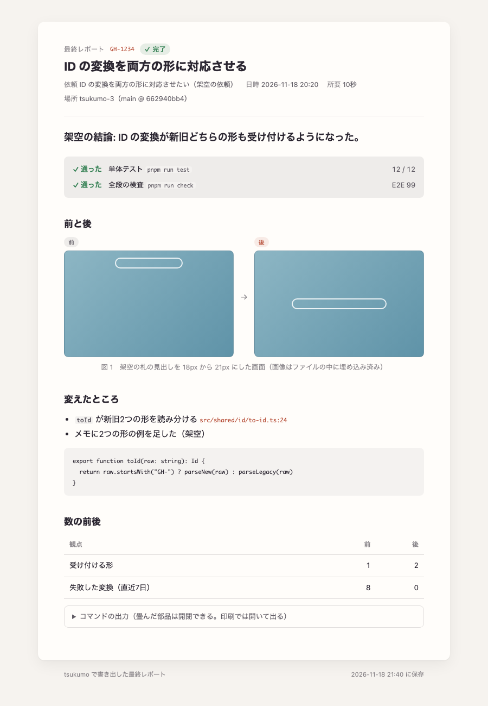
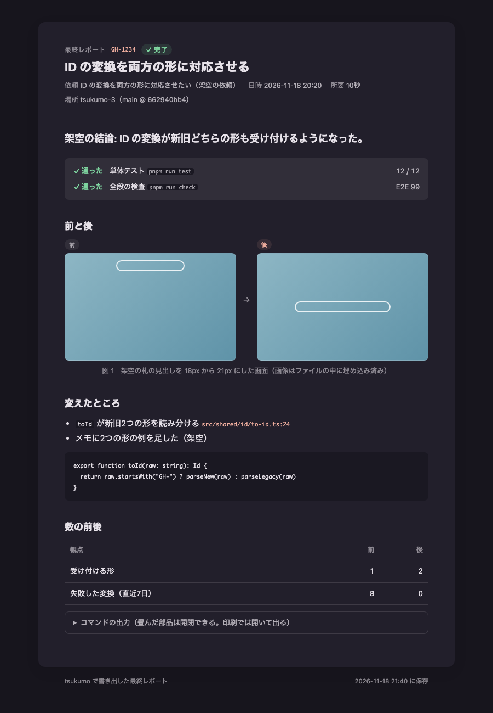

最終レポートの見出しの行に「HTML で保存」を置き、押すと同じレポートを1ファイルで完結した HTML にしてディスクへ保存する。会話の背景や立ち絵は持ち出さず、明るい紙・暗い紙・印刷のどれでも読めるレポート単体の文書にする。
/tmp などのローカルパスなので、サーバが読んで埋め込む。保存先は ~/Downloads/。アイコンは「広げる」と同じ線の太さ・同じ大きさ。字は「HTML で保存」で、何が起きるかを語で言う（アイコンだけにしない）。
架空の結論: ID の変換が新旧どちらの形も受け付けるようになった。
架空の結論: ID の変換が新旧どちらの形も受け付けるようになった。
架空の結論: ID の変換が新旧どちらの形も受け付けるようになった。
架空の結論: ID の変換が新旧どちらの形も受け付けるようになった。
板の頭は「最終レポート」の題と「閉じる」だけなので、「閉じる」の左に同じボタンを置く。知らせの1行も板の頭のすぐ下に出す。
架空の結論: ID の変換が新旧どちらの形も受け付けるようになった。
1ファイルで完結し、外部の読み込みは無い。開いた環境の明暗に合わせて紙の色が替わり、印刷では背景を落として畳みを開く。左が明るい環境、右が暗い環境での見え方。


prefers-color-scheme: dark）中身は画面のレポートと同じで、削る・並べ替える・言い換えることはしない。動く部品だけを、そのとき見えている形で止める。
| 部品・欄 | 扱い | ファイルでの形 |
|---|---|---|
| 表紙の帯 | 足す | 種類（最終レポート）・タスク ID・終わり方・作業の名前・依頼の1行目・日時・所要・作業ツリーと HEAD |
| 結論・確かめたこと・節・表・コード・図 | そのまま | 描いた DOM と同じ構造。図（Mermaid・Graph・Svg・Chart）は描いた SVG を埋め込む |
| 画像（Picture・Compare の画） | 埋め込む | サーバがローカルのファイルを読み、data: の URL にする。読めない画像は「画像を読めなかった: パス」の1行 |
| 畳んだ部品（fold） | 開閉できる | <details> のまま。印刷では開いて出す |
| Tabs・前後の切り替え | 止める | タブは全部を順に並べ、前後は「並べる」の形で出す |
| ParameterSlider・ChoicePicker | 止める | 保存したときの値で描いた形。部品は値の1行に替える |
path:line のリンク | 字にする | 押せない等幅の字（ファイルの外では開けないので） |
| コピーのボタン・欄外注の札・「分かった」 | 落とす | 画面の操作だけのもの |
| 締めのセリフ・待ちの一言・立ち絵・背景 | 落とす | キャラクターの声は画面の側に属する。レポート本文は中立の技術文なので、それだけで読める |
~/Downloads/ でよいか。ブラウザのダウンロードにする手もあるが、Orca のタブでダウンロードがどう扱われるかが確かめられていないので、サーバが書いて「開く」「Finder で表示」を返す形を推す。tsukumo-report-<タスクID か題>-<年月日>-<時分>.html。タスクの無いやり取りはセッションの題を短くして使う。同じ名前があれば末尾に -2 を足す。